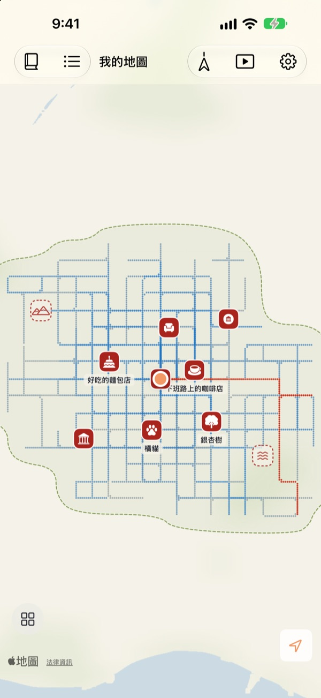
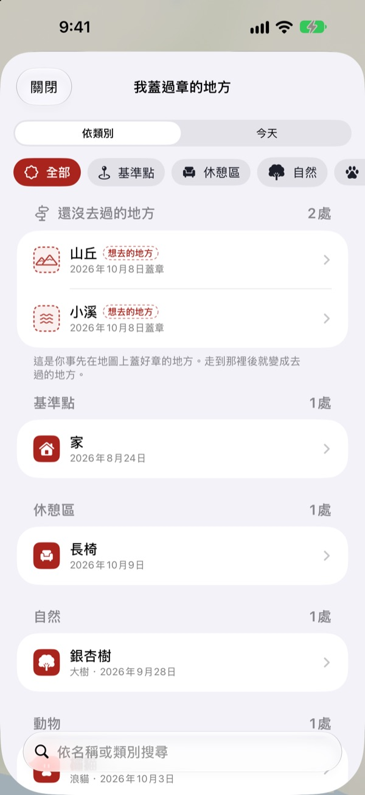
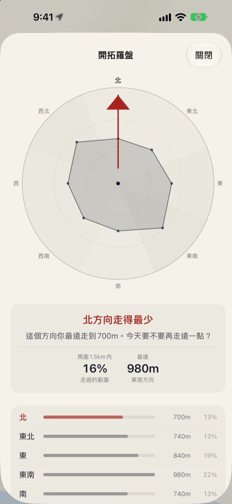
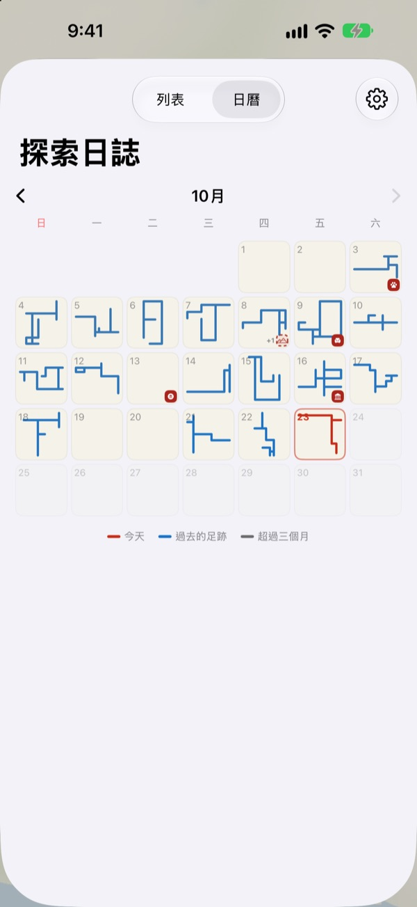

只有走過的路
才會被畫上
一開始只是一張白紙。只有你親腳走過的地方會一點一點填滿，同一條路走一百遍也不會變大。想讓地圖變大，就去走一條新路。
所有功能免費，沒有廣告。

走走看
用手指或滑鼠在紙上拖曳，就算走路。藍色的點是以前走過的路。比較一下沿著舊路走和往新方向走時，「今天畫的路」會怎麼變化。
每天都走同樣的路？
計步器只算步數，從不在意你走去了哪裡。家和車站來回一趟，圓環就滿了，隔壁那條小巷卻好幾年都沒走進去過。Buktu Buktu 只計算第一次走的路，讓你今天有理由多繞一個街區。
為去過和想去的地方蓋章
可以在你站著的地方蓋章，也可以長按地圖上任意位置。共有 212 種印章，依類別挑選。
蓋在從沒走過之處的印章會保留為「想去的地方」，真的走到那裡後就變成「去過的地方」。拍下店家招牌，背景會自動去除，變成立在那個地點的貼圖。

下一次散步，去走得最少的方向
開拓羅盤把你周圍分成八個方位，指出你走得最少的那個方向。
今日足跡依順序列出你今天停留過的地方，並標出彼此之間走了多遠。

每一天都留下一個形狀
月曆上不寫數字，而是畫出當天走過的形狀。每天用文字和照片寫日記，還能看到每次散步裡有多少是新路。
選定一段期間，就能以影片觀看地圖被畫出來的過程，並匯出。

三步開始
- 1
打開 App
一張白紙展開。
- 2
允許取用位置
選擇「永遠允許」並開啟「動作與健身」，不打開 App 也能記錄散步。
- 3
出門走走
越陌生的街道，地圖長得越多。
如何看地圖
- 紅點
- 今天走過的地方
- 靛藍色點
- 過去的足跡，越常經過顏色越深
- 灰點
- 超過三個月沒再去的地方，會褪色但不會消失
- 虛線印章
- 想去的地方，走到那裡就變成去過的地方
- 我畫出的路
- 所有第一次走過的路的總長度
- 今天畫的路
- 今天走的路中有多少是新路
- 彙整檢視
- 在設定中打開開拓羅盤、今日足跡和繪製影片
地圖可以在水墨地圖和繪本地圖之間選擇。
所有功能免費
免費
- 只在走過的地方填滿的地圖，並記錄新路
- 212 種印章和店家招牌貼圖
- 開拓羅盤和今日足跡
- 月曆，以及圖文日記
- 匯出地圖繪製過程的影片
- 主畫面和鎖定畫面小工具
- 透過 iCloud 在裝置間同步
支持開發者
- 如果願意，可以在設定裡給一點小費
- 小費不會解鎖任何功能，App 都是一樣的
沒有廣告，沒有訂閱。
常見問題
走了路，地圖上卻什麼都沒有。
請前往「設定」>「Buktu Buktu」>「位置」，選擇「永遠」，並開啟「動作與健身」。這樣即使 App 關閉也能記錄。如果你在 App 設定裡選了省電的紀錄方式，請先打開 App 再出發。精確度較低的位置會被儲存，但不會畫在地圖上。
搭車或捷運會被記錄嗎？
不會。App 根據動作資料和速度只畫出步行和跑步，看起來像搭車的路段會被去掉。偶爾也會判斷錯誤。
我每天走同一條路線，地圖卻沒有變大。
這就是規則。離已走過的地方 30 m 以內都算同一條路，所以只有第一次走的路才會加進「我畫出的路」。馬路對面的人行道也算同一條路。開拓羅盤會告訴你哪裡走得最少。
我的位置會被傳送到別處嗎？
不會傳送給開發者。你的足跡、印章、日記和照片儲存在你的裝置和你個人的 iCloud 中，開發者看不到。匿名使用統計絕不包含座標、日記文字、地點名稱或照片。把座標轉換為地點名稱時會使用 Apple 地圖服務。詳情請看下方的隱私政策。
換新裝置後紀錄會跟過來嗎？
會。在新裝置上登入同一個 Apple 帳號並保持 iCloud 開啟，足跡、印章、日記和照片都會跟過來。
怎麼刪除印章或照片？
在「我蓋過章的地方」列表中刪除印章；按住日記裡的照片即可刪除。一次清除所有路線和日記的功能已列入開發計畫。
怎麼加入小工具？
在主畫面上按住，點一下「編輯」>「加入小工具」，然後選擇 Buktu Buktu。鎖定畫面則按住後點一下「自訂」。主畫面小工具顯示今天路線的形狀和長度，鎖定畫面顯示今天的距離。
需要什麼裝置？
執行 iOS 17.0 或以上版本的 iPhone。
要怎麼聯絡你們？
可以在 App 的設定中傳送意見回饋，或寄信到下方地址。我們會盡快回覆。
有問題或建議？請寫信至 leeo@kakao.com。